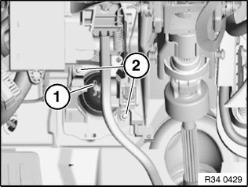
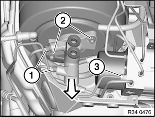
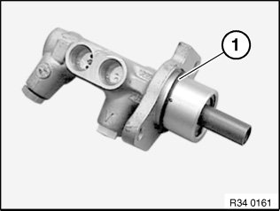
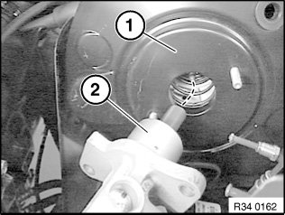
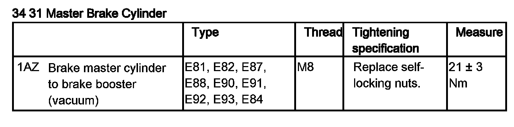

34 31 505 Removing and Installing/Replacing Master Brake Cylinder for DSC
34 31 505 Removing and installing / replacing master brake cylinder for DSCSpecial tools required:
Necessary preliminary tasks:
^ Remove expansion tank.
^ Remove footwell trim.
^ Read and comply with General Information.
Important!
The brake booster must be slackened so that the brake master cylinder can be removed and installed without tilting!

Remove locking clip (1) and disengage and pull out locking pin.
Slacken nuts (2).
Installation:
Replace self-locking nuts.
Tightening torque 35 11 1AZ.

Important!
Do not bend brake lines.
Unfasten brake lines (1).
Installation:
Tightening torque 34 32 1AZ.
Close off brake lines and brake master cylinder with plugs 32 1 270.
If necessary, detach line (3) from hydraulic unit and press downwards slightly.
Installation:
Tightening torque 34 32 1AZ.
Release nuts (2) and feed brake master cylinder out of brake booster.
Installation:
Replace self-locking nuts.
Tightening torque 34 31 1AZ.
Installation:
Replace sealing ring.


Installation:
When inserting the brake master cylinder (2) into the brake booster (1), make sure the pressure rod of the brake booster and that of the brake master cylinder meet each other on one level.
After Installation:
^ Bleeding brake system with DSC
